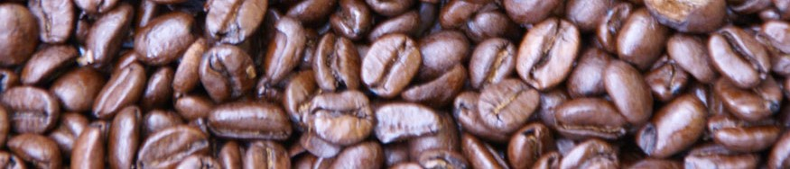

 ALL ABOUT COFFEE
Coffee Roasting

Roasting coffee transforms the chemical and physical properties of green coffee beans. When roasted, the green coffee bean expands to nearly double its original size, changing in color and density. As the bean absorbs heat, its color shifts to yellow, then to a light "cinnamon" brown, and then to a rich dark brown color. During roasting, oils appear on the surface of the bean. The roast will continue to darken until it is removed from the heat source.
Coffee can be roasted with ordinary kitchen equipment (frying pan, grill, oven, popcorn popper) or by specialised appliances. A coffee roaster is a special pan or apparatus suitable to heat up and roast green coffee beans.
The vast majority of coffee is roasted commercially on a large scale, but small-scale commercial roasting has grown significantly with the trend toward "single-origin" coffees served at specialty shops. Some coffee drinkers even roast coffee at home as a hobby in order to both experiment with the flavor profile of the beans and ensure themselves of the freshest possible roast.